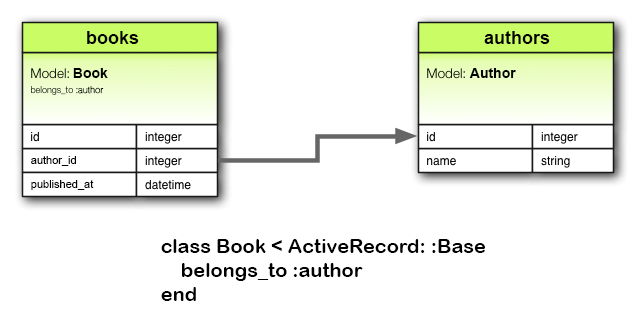
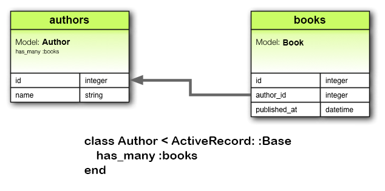
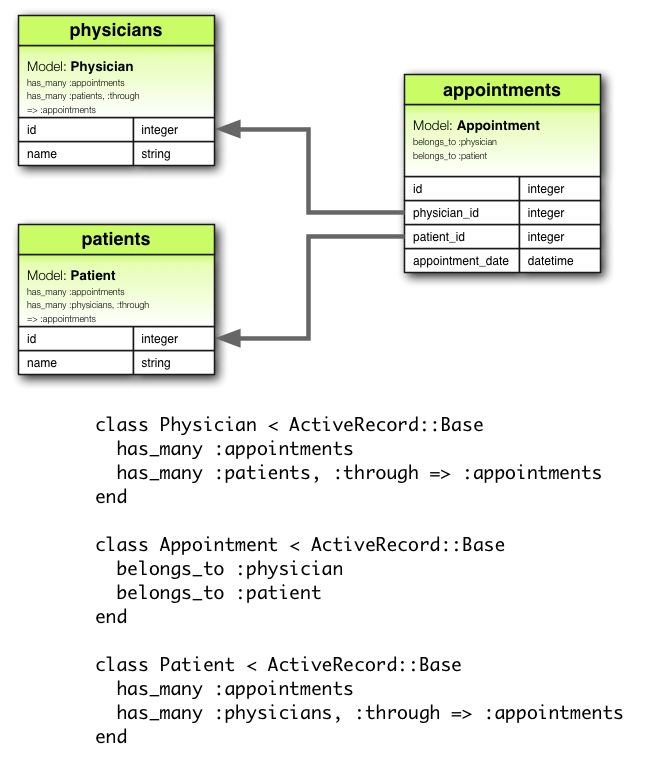

1 관계를 선언하는 이유
모델과 모델 사이에는 관계를 선언할 필요가 있습니다만, 그 이유를 알고 계시나요? 관계를 선언하면 그를 이용해서 필요한 조작들을 무척 간단하게 할 수 있기 때문입니다. 간단한 Rails 애플리케이션을 예로 들어서 설명해보겠습니다. 이 애플리케이션에는 저자 모델(Author)과 책 모델(Book)이 있다고 합시다. 관계를 사용하지 않는다면 다음과 같이 선언할 수 있습니다.
class Author < ApplicationRecord end class Book < ApplicationRecord end
여기서 기존의 저자에 새 책을 하나 추가한다고 합시다. 이 경우, 아래와 같은 코드를 실행해야합니다.
@book = Book.create(published_at: Time.now, author_id: @author.id)
이번에는 저자를 삭제하는 경우를 생각해봅시다. 저자를 삭제하는 경우, 아래와 같이 저자의 책도 남김없이 삭제해야합니다.
@books = Book.where(author_id: @author.id) @books.each do |book| book.destroy end @author.destroy
Active Record의 관계 선언 기능을 사용하면, 2개의 모델 간에 연결이 있다는 것을 Rails에 명시적으로 선언할 수 있습니다. 저자와 책 모델을 다음과 같이 변경하세요.
class Author < ApplicationRecord has_many :books, dependent: :destroy end class Book < ApplicationRecord belongs_to :author end
이와 같이 관계를 선언하는 것으로 저자의 새로운 책을 하나 추가할 경우에 해야하는 작업이 아래와 같이 한 줄로 줄어듭니다.
@book = @author.books.create(published_at: Time.now)
저자와 저자의 책을 한번에 삭제하는 작업은 더 간단합니다.
@author.destroy
다른 관계를 선언하는 방법에 대해서는 다음 장을 읽어주세요. 그 뒤에는 관계 선언에 필요한 다양한 팁, 활용 방법과 Rails의 관계 선언 메소드와 옵션을 상세하게 소개합니다.
2 관계 선언의 종류
Rails는 다음의 6가지의 관계를 지원합니다.
belongs_tohas_onehas_manyhas_many :throughhas_one :throughhas_and_belongs_to_many
관계 선언은 매크로 형식으로 구현되어있으며 이를 통해 모델간의 관계를
선언적으로 추가할 수 있습니다. 예를 들어, 어떤 모델이 다른 모델에 종속되어
있음(belongs_to)을 선언하면 2개의 모델의 각각 인스턴스 사이에 '기본키 - 외래키'
정보를 유지하도록 Rails에게 지시할 수 있으며, 다양한 편의 메소드들도 추가할
수 있습니다.
이 가이드에서는 각각의 관계의 선언방법과 사용방법에 대해서 자세히 설명합니다. 그 전에 각각의 관계가 어떤 상황에서 적절한지에 대해서 간단히 소개합니다.
2.1 belongs_to
어떤 모델에서 belongs_to 관계를 선언하면 다른 편의 모델간에 '1대1' 관계가
설정됩니다. 이 때 선언한 모델의 모든 인스턴스는 다른 편의 모델의 인스턴스에
'종속(belongs to)'됩니다. 예를 들어 Rails 애플리케이션에 저자(author)와
책(book) 정보가 포함되며, 1개의 책에 대해 정확히 1명의 저자만이 존재할 수
있다고 한다면, Book 모델은 다음과 같이 선언할 수 있습니다.
class Book < ApplicationRecord belongs_to :author end

belongs_to 관계를 지정하는 모델 명은 '단수형'이어야 합니다. 예제의
경우 Book 모델에서 관계 선언을 author의 복수형인 authors로 하게 되면
"uninitialized constant Book::Authors" 에러가 발생합니다. Rails에는 관계로
선언된 이름에서 자동적으로 모델의 클래스 명을 추측합니다. 관계 선언이
'author'으로 되어 있다면, Author라고 추측합니다. 따라서 관계 선언을
복수형으로 잘못하게 된다면, 잘못된 클래스명을 추측하게 됩니다.
위의 선언에 대응하는 마이그레이션은 아래와 같은 모습이 됩니다.
class CreateBooks < ActiveRecord::Migration[5.0]
def change
create_table :authors do |t|
t.string :name
t.timestamps
end
create_table :books do |t|
t.belongs_to :author, index: true
t.datetime :published_at
t.timestamps
end
end
end
2.2 has_one
has_one 관계도 반대편의 모델과 1대1 관계를 설정합니다. 그러나, 그 의미와
결과는 belongs_to와는 약간 다릅니다. has_one 관계를 선언하는 경우,
그 선언이 있었던 모델의 인스턴스가 반대편의 모델의 인스턴스를 '통째로
포함'하거나 또는 '소유'하고 있다는 것을 의미합니다. 예를 들자면
공급자(supplier) 한 명 마다 계정을 하나씩 가질 수 있다는 관계가 있다고 한다면,
아래와 같이 선언할 수 있습니다.
class Supplier < ApplicationRecord has_one :account end

위의 관계에 대응하는 마이그레이션은 다음과 같습니다.
class CreateSuppliers < ActiveRecord::Migration[5.0]
def change
create_table :suppliers do |t|
t.string :name
t.timestamps
end
create_table :accounts do |t|
t.belongs_to :supplier, index: true
t.string :account_number
t.timestamps
end
end
end
사용 방식에 따라서는 유일한 인덱스를 만들거나 계정 테이블에 공급자의 외래키를 만들어야 할 수도 있습니다. 이런 경우 컬럼 정의는 아래처럼 작성할 수 있습니다.
create_table :accounts do |t| t.belongs_to :supplier, index: true, unique: true, foreign_key: true # ... end
2.3 has_many
has_many 관계는 '일대다'의 관계를 나타냅니다. has_many 관계가 사용되는
경우, 반대편의 모델에서는 belongs_to가 사용되는 경우가 많습니다. 선언된
모델의 인스턴스는 피 선언된 모델의 '0개 이상의' 인스턴스를 소유합니다.
예를 들어 저자(author)와 책(book)을 포함하는 Rails 애플리케이션에서는 저자
모델을 아래와 같이 선언할 수 있습니다.
class Author < ApplicationRecord has_many :books end
has_many 관계를 선언하는 경우, 상대의 모델명을 '복수형'으로 해야합니다.

이 관계에 대응하는 마이그레이션은 다음과 같습니다.
class CreateAuthors < ActiveRecord::Migration[5.0]
def change
create_table :authors do |t|
t.string :name
t.timestamps
end
create_table :books do |t|
t.belongs_to :author, index: true
t.datetime :published_at
t.timestamps
end
end
end
2.4 has_many :through
has_many :through 관계는 다른 모델과 '다대다' 관계를 설정하는 경우에
사용됩니다. 이 관계 선언은 2개의 모델 사이에 '제3의 모델'이 사용되는 것이
특징입니다. 이를 이용해 상대 모델의 '0개 이상'의 인스턴스와 연결됩니다.
예를 들어 환자(patient)가 의사(physician) 사이에 진찰예약(appointment)을
신청하는 경우를 생각해봅시다. 이 경우, 관계 선언은 다음과 같이 할 수 있습니다.
class Physician < ApplicationRecord has_many :appointments has_many :patients, through: :appointments end class Appointment < ApplicationRecord belongs_to :physician belongs_to :patient end class Patient < ApplicationRecord has_many :appointments has_many :physicians, through: :appointments end

이 관계에 대응하는 마이그레이션은 아래와 같습니다.
class CreateAppointments < ActiveRecord::Migration[5.0]
def change
create_table :physicians do |t|
t.string :name
t.timestamps
end
create_table :patients do |t|
t.string :name
t.timestamps
end
create_table :appointments do |t|
t.belongs_to :physician, index: true
t.belongs_to :patient, index: true
t.datetime :appointment_date
t.timestamps
end
end
end
조인 모델의 컬렉션은 API를 통해서 처리할 수 있습니다. 예를 들자면 다음과 같이 대입한다고 합시다.
physician.patients = patients
이때, 새롭게 관계가 선언된 객체에 대해서 새로운 조인 모델이 생성됩니다. 그 중 문제가 있는 객체의 경우는 삭제되며, 조인 모델 컬렉션에 포함되지 않습니다.
문제가 있는 경우의 자동 삭제는 바로 이루어집니다. 이 경우 삭제 관련 콜백은 호출되지 않으므로 주의해주세요.
has_many :through 관련은 중첩된 has_many 관계를 통해서 지름길을 설정하는
경우에도 편리합니다. 예를 들어 1개의 문서에 많은 장(section)이 있고, 1개의
장에는 많은 단락(paragraph)가 있는 상태에서, 장을 통하지 않고 문서에 존재하는
모든 단락을 포함하는 콜렉션이 필요하다고 가정해봅시다. 이 경우 아래와 같이
정의할 수 있습니다.
class Document < ApplicationRecord has_many :sections has_many :paragraphs, through: :sections end class Section < ApplicationRecord belongs_to :document has_many :paragraphs end class Paragraph < ApplicationRecord belongs_to :section end
Rails는 through: :sections를 선언하는 것으로 다음과 같은 명령을 이해할 수
있게 됩니다.
@document.paragraphs
2.5 has_one :through
has_one :through 관계는 다른 모델과 일대일 관계를 설정합니다. 이 관계는
2개의 모델 사이에 '제3의 모델'을 사용하는 점이 특징입니다. 이에 따라, 상대
모델을 1개의 인스턴스를 매칭합니다. 예를 들어 1명의 공급자(supplier)가 1개의
계정을 가지며, 1개의 계정은 1개의 계정 이력(account_history)을 가지는 경우,
공급자 모델은 아래와 같이 선언될 수 있습니다.
class Supplier < ApplicationRecord has_one :account has_one :account_history, through: :account end class Account < ApplicationRecord belongs_to :supplier has_one :account_history end class AccountHistory < ApplicationRecord belongs_to :account end

이 관계에 대응하는 마이그레이션은 다음과 같습니다.
class CreateAccountHistories < ActiveRecord::Migration[5.0]
def change
create_table :suppliers do |t|
t.string :name
t.timestamps
end
create_table :accounts do |t|
t.belongs_to :supplier, index: true
t.string :account_number
t.timestamps
end
create_table :account_histories do |t|
t.belongs_to :account, index: true
t.integer :credit_rating
t.timestamps
end
end
end
2.6 has_and_belongs_to_many
has_and_belongs_to_many 관계는 다른 모델과 '다대다'의 관계를 생성합니다만,
through:를 지정하는 경우와는 다르게, 제 3의 모델을 사용하지 않습니다(역주:
아래에서 설명하지만, 조인용 테이블은 필요합니다). 예를 들어 애플리케이션에
완성품(assembly)과 부품(part)이 있고, 1개의 완성품에 여러 부품을 사용하고,
반대로 1개의 부품에도 여러 개의 완성품이 대응되는 경우, 모델은 다음과 같이
선언할 수 있습니다.
class Assembly < ApplicationRecord has_and_belongs_to_many :parts end class Part < ApplicationRecord has_and_belongs_to_many :assemblies end

이 관계에 대응하는 마이그레이션은 다음과 같습니다.
class CreateAssembliesAndParts < ActiveRecord::Migration[5.0]
def change
create_table :assemblies do |t|
t.string :name
t.timestamps
end
create_table :parts do |t|
t.string :part_number
t.timestamps
end
create_table :assemblies_parts, id: false do |t|
t.belongs_to :assembly, index: true
t.belongs_to :part, index: true
end
end
end
2.7 belongs_to와 has_one 중 어느 것을 사용해야 하는가
2개의 모델 간에 1대1 관계를 생성하고 싶은 경우, 어느 한쪽에 belongs_to을
추가히고 반대편의 모델에 has_one을 추가해야 합니다. 어느 관계를 어느 모델에
두어야 할까요.
구별의 기준이 되는 것은 외래키(foreign key)를 어느쪽에 두는가, 입니다(외래키는
belongs_to를 추가한 쪽의 모델의 테이블에 추가됩니다). 물론 이것만으로는
결정할 수 없습니다. 데이터의 실제 의미에 대해서도 생각해 볼 필요가 있습니다.
has_one이라는 관계는 주어가 목적어를 소유하고 있다, 라는 것을 표현하고
있습니다. 그리고 목적어는 주어에게 소유당하고 있다는 것을 나타냅니다. 예를
들어, '공급자가 계정을 가지고 있다'고 보는 것이 '계정이 공급자를
가지고 있다'보다 자연스럽습니다. 다시 말해, 이 경우 올바른 관계는 다음과
같습니다.
class Supplier < ApplicationRecord has_one :account end class Account < ApplicationRecord belongs_to :supplier end
이 관계에 대응하는 마이그레이션은 아래와 같습니다.
class CreateSuppliers < ActiveRecord::Migration[5.0]
def change
create_table :suppliers do |t|
t.string :name
t.timestamps
end
create_table :accounts do |t|
t.integer :supplier_id
t.string :account_number
t.timestamps
end
end
end
마이그레이션에서 t.integer :supplier_id처럼 '소문자 모델명_id'라고
적는 것으로 외래키를 명시적으로 지정할 수 있습니다. 현재 버전의 Rails에서는
t.references :supplier라는 식으로 자세한 구현을 추상화하여 숨기는 방식을
사용할 수 있습니다.
2.8 has_many :through와 has_and_belongs_to_many 중 어느 것을 사용해야 하는가
Rails에서는 모델간의 다대다 관계를 선언할때 2가지 방법이 사용가능합니다.
간단한 것은 has_and_belongs_to_many를 사용하는 방법입니다. 이 방법으로는
관계를 직접적으로 지정할 수 있습니다.
class Assembly < ApplicationRecord has_and_belongs_to_many :parts end class Part < ApplicationRecord has_and_belongs_to_many :assemblies end
다대다 관계를 선언하는 다른 방법으로는 has_many :through가 있습니다.
이 경우에는 조인 모델을 사용한 간접적인 관계 선언이 사용됩니다.
class Assembly < ApplicationRecord has_many :manifests has_many :parts, through: :manifests end class Manifest < ApplicationRecord belongs_to :assembly belongs_to :part end class Part < ApplicationRecord has_many :manifests has_many :assemblies, through: :manifests end
각 모델 자체를 독립적으로 다루고 싶은 경우(관계 자체에 대한 처리를 하고 싶은
경우)에는 중간에 조인 모델을 사용하는 has_many :through를 선택하는 것이
가장 간단합니다. 관계 사이에 전혀 처리를 할 필요가 없다면 조인 모델을 준비할
필요가 없는 has_and_belongs_to_many를 사용하는 것이 간단합니다(단,
이 경우에는 조인 모델이 필요 없지만, 조인용 테이블은 별도로 작성해야 한다는
점을 잊지 마세요).
조인 모델에서 유효성 검사, 콜백, 추가 속성 등이 필요한 경우에는
has_many :through를 사용하세요.
2.9 Polymorphic Assosiation
다형 관계는 관계 선언을 응용한 것입니다. 다형 관계를 사용하면 어떤 모델이 여러 개의 모델에 속해 있다는 사실을 하나의 관계 선언으로 표현할 수 있습니다. 예를 들어 사진(picture) 모델이 있고, 그 모델을 종업원(employee) 모델과 제품(product) 모델 모두에게 종속시키고 싶다고 해봅시다. 이 경우 아래와 같이 선언합니다.
class Picture < ApplicationRecord belongs_to :imageable, polymorphic: true end class Employee < ApplicationRecord has_many :pictures, as: :imageable end class Product < ApplicationRecord has_many :pictures, as: :imageable end
다형적인 belongs_to는 다른 어떤 모델에서도 사용 가능한 인터페이스를
선언하는 것이라고 생각할 수 있습니다. @employee.pictures라고 호출하면
사진 컬렉션을 Employee 모델의 인스턴스에서 얻을 수 있습니다.
마찬가지로 @product.pictures라고 호출하면 Product 모델의 인스턴스에서 사진
컬렉션을 얻을 수 있습니다.
Picture 모델의 인스턴스가 있다면, @picture.imageable이라고 호출하는 것으로
부모 객체를 얻을 수 있습니다. 이를 위해서는 다형적인 인터페이스를 사용하는
모델에서 외래키 컬럼과 형식을 저장하는 컬럼을 선언해야 합니다.
class CreatePictures < ActiveRecord::Migration[5.0]
def change
create_table :pictures do |t|
t.string :name
t.integer :imageable_id
t.string :imageable_type
t.timestamps
end
end
end
t.references 를 사용하면 좀 더 간단하게 작성할 수 있습니다.
class CreatePictures < ActiveRecord::Migration[5.0]
def change
create_table :pictures do |t|
t.string :name
t.references :imageable, polymorphic: true, index: true
t.timestamps
end
end
end

2.10 Self Joins
데이터 모델을 설계하다보면 때때로 자기자신에 관계를 선언해야할 필요가 있는 모델을 사용하게 됩니다. 예를 들어 하나의 데이터베이스 모델에 모든 종업원 정보를 저장하고 싶은데, 매니저와 일반직원(subordinate)의 관계를 추가하고 싶은 경우 등이 있을겁니다. 이런 상황에서는 자체 조인 관계를 사용해서 모델로 추상화할 수 있습니다.
class Employee < ApplicationRecord
has_many :subordinates, class_name: "Employee",
foreign_key: "manager_id"
belongs_to :manager, class_name: "Employee"
end
이렇게 선언하면 @employee.subordinates와 @employee.manager를 사용할 수 있게 됩니다.
마이그레이션과 스키마에는 모델 자신에게 references 컬럼을 추가하면 됩니다.
class CreateEmployees < ActiveRecord::Migration[5.0]
def change
create_table :employees do |t|
t.references :manager
t.timestamps
end
end
end
3 팁과 주의사항
Rails 애플리케이션에서 Active Record의 관계 선언을 효율적으로 사용하기 위해서는 아래와 같은 것들을 알아두어야 합니다.
- 캐시 제어
- 중복된 이름 사용 피하기
- 스키마 갱신하기
- 관계의 스코프 제어
- 양방향 관계 선언
3.1 캐시 제어
관계 메소드는 모두 캐시를 이용해서 구축되어 있습니다. 마지막으로 실행한 쿼리의 결과를 캐시에 저장해두고, 그 이후의 조작에서 사용합니다. 이 캐시는 메소드간에도 공유된다는 점에 주의해주세요. 예를 들자면,
author.books # 데이터베이스에서 books를 얻어온다 author.books.size # books 캐시가 사용된다 author.books.empty? # books 캐시가 사용된다
데이터가 애플리케이션의 다른 부분에 의해서 변경될 가능성을 고려하여, 데이터를
새로 읽어오고 싶은 경우에는 어떻게 해야할까요? 이 경우에는 reload 메소드를
호출하세요.
author.books # 데이터베이스에서 books를 얻어온다
author.books.size # books 캐시가 사용된다
author.books.reload.empty? # books 캐시를 삭제하고 데이터베이스에서
# 다시 읽어온다
3.2 중복된 이름 사용 피하기
관계 선언에 모든 이름을 사용할 수 있는 것은 아닙니다. 관계 선언시에는 관계
이름과 같은 이름의 메소드가 추가됩니다. 따라서 ApplicationRecord의
인스턴스에서 이미 사용되고 있는 이름을 관계 선언시에 사용해서는 안됩니다.
중복되는 이름을 사용하게 되면 기존에 선언되어있던 메소드들을 덮어쓰게 됩니다.
예를 들어, attributes나 connection은 관계 선언시에 써서는 안되는 이름 중
하나입니다.
3.3 스키마 갱신하기
관계 선언은 무척 편리합니다만 아쉽게도 모든 것을 알아서 해주는 마법은 아닙니다.
관계 선언을 사용게 되면, 이에 맞게끔 데이터베이스 스키마를 갱신해야합니다.
선언한 관계에 따라 다르겠습니다만, 구체적으로 아래의 2개의 작업이 필요합니다. 1. belongs_to를 사용하는 경우에는 외래키를 추가해야합니다. 2. has_and_belongs_to_many를 사용하는 경우에는 적절한 조인 테이블을 추가해야합니다.
3.3.1 belongs_to에 대응하는 외래키 추가하기
belongs_to를 선언하면 이에 맞는 외래키를 추가해야합니다. 아래의 모델을 예로 들겠습니다.
class Book < ApplicationRecord belongs_to :author end
이 선언은 books 테이블에 아래와 같이 외래키를 추가해야할 필요가 있습니다.
class CreateBooks < ActiveRecord::Migration[5.0]
def change
create_table :books do |t|
t.datetime :published_at
t.string :book_number
t.integer :author_id
end
add_index :books, :author_id
end
end
모델을 먼저 만들고, 그 이후에 관계를 선언하는 경우에는 add_column
마이그레이션을 작성해서 대상 테이블에 필요한 외래키를 추가해주세요.
3.3.2 has_and_belongs_to_many 관계를 위한 조인 테이블 추가하기
has_and_belongs_to_many를 선언한 경우에는 이를 처리하기 위한 조인 테이블을
명시적으로 추가할 필요가 있습니다. :join_table 옵션을 사용해서 조인 테이블의
이름이 명시적으로 지정되지 않은 경우, Active Record는 2개의 클래스명을
사전순으로 늘어놓고 연결한 뒤, 적당한 조인 테이블 명을 추측합니다. 예를 들어
Author 모델과 Book 모델이 있다면, "a"가 "b"보다 사전에서 먼저 나오기 때문에
"authors_books"라는 기본 조인 테이블 명이 사용됩니다.
모델의 이름 순서는 String 클래스의 < 연산자를 사용해서 계산됩니다.
이것은 두 문자열의 길이가 다르고, 짧은 쪽이 긴 쪽의 앞부분에 완전히 일치한
경우, 긴 쪽의 문자열은 짧은 쪽의 문자열보다 사전순이 뒤쪽이 됩니다. 예를 들어
"paper_boxes" 테이블과 "papers" 테이블이 있는 경우, 이 테이블명을 합치면
"papers_paper_boxes"가 되는 것처럼 보입니다. "paper_boxes"가 길기 때문에
상식적으로는 뒤에 위치할 것으로 추측되기 때문입니다. 그러나 실제로 Rails가
예측한 결합 테이블 이름은 "paper_boxes_papers"입니다. 이는 언더스코어
'_' 가 's'보다 우선순위가 높기 때문입니다.
생성된 이름이 어떻든, 적절한 마이그레이션을 실행해서 조인 테이블을 생성해야 합니다. 다음을 생각해봅시다.
class Assembly < ApplicationRecord has_and_belongs_to_many :parts end class Part < ApplicationRecord has_and_belongs_to_many :assemblies end
이 관계에 대응하는 assemblies_parts 테이블을 마이그레이션으로 추가해야
합니다. 이 테이블에는 기본키를 설정하지 말아주세요.
class CreateAssembliesPartsJoinTable < ActiveRecord::Migration[5.0]
def change
create_table :assemblies_parts, id: false do |t|
t.integer :assembly_id
t.integer :part_id
end
add_index :assemblies_parts, :assembly_id
add_index :assemblies_parts, :part_id
end
end
이 테이블은 모델을 가지지 않으므로 create_table에 id: false를 넘겨줍니다.
이렇게 하지 않으면 이 조인 테이블은 정상적으로 동작하지 않습니다. 모델의 ID가
비정상적이거나, 사용중에 예외가 발생하는 등 has_and_belongs_to_many의 동작이
수상한 경우에는 이 설정이 제대로 되어있는지 확인해보세요.
아니면 create_join_table 메소드를 사용할 수도 있습니다.
class CreateAssembliesPartsJoinTable < ActiveRecord::Migration[5.0]
def change
create_join_table :assemblies, :parts do |t|
t.index :assembly_id
t.index :part_id
end
end
end
3.4 관계의 스코프 제어
기본적으로 관계 선언에 의해서는 현재 모듈의 범위 내에 존재하는 객체만이 검색됩니다. Active Record 모델을 모듈 내에서 선언한 경우라면 이를 주의할 필요가 있습니다. 예를 들어,
module MyApplication
module Business
class Supplier < ApplicationRecord
has_one :account
end
class Account < ApplicationRecord
belongs_to :supplier
end
end
end
이 코드는 정상적으로 동작합니다. 이것은 Supplier 클래스와 Account 클래스가
같은 모듈 내에서 정의되어 있기 때문입니다. 반대로 아래의 코드는 동작하지
않습니다. Supplier 클래스와 Account 클래스가 서로 다른 스코프에서 정의되어
있기 때문입니다.
module MyApplication
module Business
class Supplier < ApplicationRecord
has_one :account
end
end
module Billing
class Account < ApplicationRecord
belongs_to :supplier
end
end
end
다른 스코프에 있는 모델을 이용해 관계를 선언하려면 관계 선언시에 정확한 클래스 명을 지정하면 됩니다.
module MyApplication
module Business
class Supplier < ApplicationRecord
has_one :account,
class_name: "MyApplication::Billing::Account"
end
end
module Billing
class Account < ApplicationRecord
belongs_to :supplier,
class_name: "MyApplication::Business::Supplier"
end
end
end
3.5 양방향 관계 선언
관계는 일반적으로 양쪽에 모두 선언됩니다.
class Author < ApplicationRecord has_many :books end class Book < ApplicationRecord belongs_to :author end
Active Record는 이 양방향 관계 선언에 대해 별도의 처리를 하지 않습니다. 이에 따라서 아래처럼 객체 2개의 사본 간에 내용이 일치하지 않는 경우가 생깁니다.
a = Author.first b = c.books.first a.first_name == b.author.first_name # => true a.first_name = 'Manny' a.first_name == b.author.first_name # => false
이런 문제가 발생하는 이유는 a와 b.author라는 같은 데이터임에도 메모리 상에서는
다른 것으로 처리되고 있으며, 한쪽이 갱신되더라도 다른쪽이 자동적으로 변경되지
않기 때문입니다. Active Record의 :inverse_of 를 사용하면 이런 문제를 해결할
수 있습니다.
class Author < ApplicationRecord has_many :books, inverse_of: :author end class Book < ApplicationRecord belongs_to :author, inverse_of: :books end
이와 같이 변경하는 것으로 Active Record는 author 객체의 사본을 하나만 읽어들이게 되며, 부정합이 발생할 가능성을 방지하고, 동시에 애플리케이션의 효율을 증가시킵니다.
a = Author.first b = a.books.first a.first_name == b.author.first_name # => true a.first_name = 'Manny' a.first_name == b.author.first_name # => true
그러나 inverse_of를 사용할 때에는 몇 가지 제한사항이 있습니다.
-
:through와 함께 사용할 수 없습니다. -
:polymorphic와 함께 사용할 수 없습니다. -
:as와 함께 사용할 수 없습니다. -
belongs_to의 경우,has_many의 역관계는 무시됩니다.
관계 선언에서는 항상 역관계를 검출하려고 합니다. 그때 :inverse_of를
휴리스틱하게 설정합니다. 일반적인 이름이라면 대부분의 관계 선언에서 역관계가
지원됩니다. 단, 아래의 옵션을 사용하는 경우에는 역관계가 자동적으로 설정되지
않습니다.
- :conditions
- :through
- :polymorphic
- :foreign_key
4 관계 선언의 레퍼런스
여기에서는 각 관계 선언을 좀 더 자세하게 설명합니다. 관계 선언에 의해서 추가되는 메소드나 옵션에 대해서도 설명합니다.
4.1 belongs_to
belongs_to는 일대일 관계를 정의합니다. 데이터베이스 용어로 설명하자면 이 관계가 선언된 클래스는 외래키가 있다는 의미입니다. 외래키가 자신의 클래스가 아닌, 다른 클래스에 있다면 belongs_to가 아닌 has_one을 사용해야합니다.
4.1.1 belongs_to에서 추가되는 메소드
belongs_to가 선언된 클래스에는 아래에 있는 5개의 메소드가 사용가능해집니다.
associationassociation=(associate)build_association(attributes = {})create_association(attributes = {})create_association!(attributes = {})
이 메소드 중, association 부분은 플레이스홀더로, belongs_to의 첫 인수로
받은 관계명이 사용됩니다. 아래의 예시에서는 author가 선언되어 있습니다.
class Book < ApplicationRecord belongs_to :author end
이에 따라서 Book 모델의 인스턴스에서는 아래의 메소드가 사용가능해집니다.
author author= build_author create_author create_author!
새로 추가한 has_one이나 belongs_to를 초기화하는 경우에는
has_many나 ahs_and_belongs_to_many에서 사용되는 association.build 대신,
build_로 시작하는 메소드를 사용해 주세요. 바로 생성을 하고 싶은 경우에는
create_로 시작되는 메소드를 사용해주세요.
4.1.1.1 association
association 메소드는 관계 선언된 객체를 반환합니다. 없는 경우에는 nil을
돌려줍니다.
@author = @book.author
관계가 선언된 객체가 데이터베이스에서 검색된 적이 있는 경우에는 캐시를
사용합니다. 이 동작을 무시하고, 직접 데이터베이스에서 값을 읽어오고 싶은
경우에는 부모 객체에 #reload를 호출해주세요.
@customer = @order.reload.customer @author = @book.reload.author
4.1.1.2 association=(associate)
association= 메소드는 인수로 받은 객체를 관계로 연결합니다. 정확히는
넘겨받은 객체에서 기본키를 찾아, 외래키로 저장합니다.
@book.author = @author
4.1.1.3 build_association(attributes = {})
build_association 메소드는 관계가 선언된 클래스의 새 객체를 반환합니다.
반환된 객체는 넘긴 속성값으로 초기화되어 외래키를 통해 연결됩니다. 단, 반환된
시점에는 아직 저장되지 않았다는 점에 주의해주세요.
@author = @book.build_author(author_number: 123,
author_name: "John Doe")
4.1.1.4 create_association(attributes = {})
create_association 메소드는 관계가 선언된 클래스의 새 객체를 반환합니다. 이 객체는 넘겨진 속성값을 이용하여 초기화되며, 그 객체의 외래키를 통해 연결됩니다. 그리고 해당 모델에서 지정되어있는 모든 검증을 통과했다면 저장됩니다.
@author = @book.create_author(author_number: 123,
author_name: "John Doe")
4.1.1.5 create_association!(attributes = {})
위의 create_association과 마찬가지입니다만, 레코드가 유효하지 않은 경우 ActiveRecord::RecordInvalid가 발생합니다.
4.1.2 belongs_to의 옵션
Rails의 belongs_to 관계는 일반적으로 커스터마이즈할 필요가 없습니다만, 때때로 필요할 때가 있을 수 있습니다. 이럴 때에는 선언 시에 넘기는 옵션과 스코프 블록을 통해 간단히 커스터마이즈 할 수 있습니다. 예를 들어, 아래와 같은 옵션을 추가할 수 있습니다.
class Book < ApplicationRecord
belongs_to :author, dependent: :destroy,
counter_cache: true
end
belongs_to에서는 아래의 옵션을 지원합니다.
:autosave:class_name:counter_cache:dependent:foreign_key:primary_key:inverse_of:polymorphic:touch:validate:optional
4.1.2.1 :autosave
:autosave를 true로 설정하면 부모 객체가 저장될 때마다 그 시점에 불러와져 있던 모든 자식 객체를 저장하고, 삭제 플래그가 설정되어있는 객체를 삭제합니다.
4.1.2.2 :class_name
관계 이름에서 상대의 객체명을 추측할 수 없는 경우, :class_name 옵션을
사용해서 모델명을 지정할 수 있습니다. 예를 들어, 책(book)이 저자(author)에 종속되어 있고, 실제 저자 모델명이 Patron일 경우에는 다음과 같이 지정합니다.
class Book < ApplicationRecord belongs_to :author, class_name: "Patron" end
4.1.2.3 :counter_cache
:counter_cache는 종속되어있는 객체의 갯수 검색 효율을 향상시킵니다. 아래의 모델을 통해 설명하겠습니다.
class Book < ApplicationRecord belongs_to :author end class Author < ApplicationRecord has_many :books end
이 선언대로라면 @author.books.size의 값을 알기 위해서 데이터베이스에 COUNT(*) 쿼리를 실행할 필요가 있습니다. 이 호출을 피하기 위해서 '종속되어있는 쪽의 모델(belongs_to가 선언되어 있는 모델)'에 카운터 캐시를 추가합니다.
class Book < ApplicationRecord belongs_to :author, counter_cache: true end class Author < ApplicationRecord has_many :books end
이와 같이 선언하면, 캐시값이 최신의 상태로 유지되며, 다음에 size 메소드가 호출되었을 때 저 값이 반환됩니다.
여기서 한가지 주의할 점이 있습니다. :counter_cache는 belongs_to 선언에서
지정합니다만, 실제로 숫자를 세고 싶은 컬럼은 종속을 요구하는 모델에 추가할
필요가 있습니다. 예제에서라면 Author 모델에 books_count 컬럼을 추가해야
합니다.
필요하다면 counter_cache에 true를 넘기는 대신 기본 컬럼명을 덮어쓸 이름을
넘길 수 있습니다. 예를 들어, books_count 대신에 count_of_books를 사용하려면
다음과 같이 선언하세요.
class Book < ApplicationRecord belongs_to :author, counter_cache: :count_of_books end class Author < ApplicationRecord has_many :books end
:counter_cache 옵션은 belongs_to를 선언하는 쪽에만 추가하면 됩니다.
카운터 캐시용의 컬럼은 모델에 attr_readonly에 의해서 읽기 전용 속성으로 추가됩니다.
4.1.2.4 :dependent
소유 객체가 삭제되었을 때 관계로 연결된 객체를 어떻게 다룰지를 결정합니다.
-
:destroy는 종속되어 있는 객체도 삭제합니다. -
:delete는 종속되어 있는 객체를 데이터베이스에서 직접 삭제합니다. 이 때 객체의 콜백은 실행되지 않습니다. -
:nullify는 외래키를NULL로 설정하며, 콜백은 실행되지 않습니다. -
:restrict_with_exception은 관계를 가지는 레코드가 있는 경우 에러를 던집니다. -
:restrict_with_error는 관계를 가지는 객체가 있는 경우 소유자에게 에러 메시지를 추가합니다.
다른 클래스와 has_many 관계가 있는 belongs_to에 이 옵션을 사용해서는 안됩니다. 부모를 잃은 레코드가 데이터베이스에 남겨질 가능성이 있습니다.
4.1.2.5 :foreign_key
Rails의 관례로는 상대 모델을 지정하는 외래키를 저장하는 조인 테이블상의 컬럼명으로 모델명에 _id를 붙인 이름을 사용합니다. :foreign_key를 사용하면 외래키의 이름을 직접 지정할 수 있습니다.
class Book < ApplicationRecord
belongs_to :author, class_name: "Patron",
foreign_key: "patron_id"
end
Rails는 외래키 컬럼을 자동적으로 생성하지 않습니다. 외래키를 사용하는 경우, 마이그레이션을 명시적으로 정의할 필요가 있습니다.
4.1.2.6 :primary_key
관습적으로 레일스는 id 컬럼이 테이블의 기본키라고 추측합니다. :primary_key
옵션을 사용하여 이를 다른 컬럼으로 지정할 수 있습니다.
예를 들어 users 테이블의 guid를 기본키로 사용하고 싶다고 합시다. 그리고
todos 테이블에서는 user_id라는 외래키를 guid컬럼으로 연결하고 있는
경우에는 다음과 같이 선언하면 됩니다.
class User < ApplicationRecord self.primary_key = 'guid' # 기본키는 id가 아닌 guid가 된다 end class Todo < ApplicationRecord belongs_to :user, primary_key: 'guid' end
@user.todos.create를 실행하면 @todo는 user_id에 @user의 guid를
가지게 됩니다.
4.1.2.7 :inverse_of
:inverse_of는 그 관계와 역관계가 되는 has_many나 has_one의 대상을 지정합니다. :polymorphic와 함께 사용하는 경우에는 무효가 됩니다.
class Author < ApplicationRecord has_many :books, inverse_of: :author end class Book < ApplicationRecord belongs_to :author, inverse_of: :books end
4.1.2.8 :polymorphic
:polymorphic에 true를 넘기면 다형 관계를 지정할 수 있습니다. 다형관계의
상세에 대해서는 다형 관계를 참조해주세요.
4.1.2.9 :touch
:touch를 :true로 지정하면 관계가 선언된 객체가 저장, 또는 삭제될 때마다
그 객체의 updated_at과 updated_on 타임스탬프에 현재 시각이 저장됩니다.
class Book < ApplicationRecord belongs_to :author, touch: true end class Author < ApplicationRecord has_many :books end
여기에서 Book 클래스는 저장, 또는 삭제될 때에 관계가 선언된 Author의 타임스탬프를 갱신합니다. 특정 타임스탬프 속성을 지정할 수도 있습니다.
class Book < ApplicationRecord belongs_to :author, touch: :books_updated_at end
4.1.2.10 :validate
:validate를 true로 지정하면 객체가 저장될 때마다, 관계가 선언된 객체에서도 검증이 수행됩니다. 기본값은 false이며, 이 경우 객체가 저장될 때에는, 관계가 설정된 객체를 검증되지 않습니다.
4.1.2.11 :optional
만약 :optional 옵션을 true로 설정했다면 관계가 설정된 객체가 존재하는지
여부를 확인하지 않습니다. 이 옵션의 기본값은 false입니다.
4.1.3 belongs_to의 스코프
상황에 따라서는 belongs_to에서 사용되는 쿼리를 커스터마이즈 하고 싶을 경우도 있습니다. 스코프 블록을 사용해서 이러한 경우를 커스터마이즈할 수 있습니다. 예를 들어,
class Book < ApplicationRecord
belongs_to :author, -> { where active: true },
dependent: :destroy
end
스코프 블록에서는 표준 쿼리 메소드를 모두 사용할 수 있습니다. 여기에서는 아래에 대해서만 설명합니다.
whereincludesreadonlyselect
4.1.3.1 where
where는 관계된 객체가 만족시켜야하는 조건을 지정합니다.
class Book < ApplicationRecord
belongs_to :author, -> { where active: true }
end
4.1.3.2 includes
includes 메소드를 사용하면 관계가 쓰이는 경우 eager-load 해두고 싶은 제2관계를 지정할 수 있습니다. 아래의 모델을 예로 들어보겠습니다.
class LineItem < ApplicationRecord belongs_to :book end class Book < ApplicationRecord belongs_to :author has_many :line_items end class Author < ApplicationRecord has_many :books end
LineItem에서 저자(Author)을 @line_item.book.author처럼 직접 가져오는 경우가 빈번하다면 LineItem과 Book의 관계를 선언할 때에 Author를 포함시켜서 쿼리의 낭비를 줄이고, 효율성을 높일 수 있습니다.
class LineItem < ApplicationRecord
belongs_to :book, -> { includes :author }
end
class Book < ApplicationRecord
belongs_to :author
has_many :line_items
end
class Author < ApplicationRecord
has_many :books
end
직접 관계된 경우에는 includes를 사용할 필요가 없습니다.
Book belongs_to :author 같은 관계 선언에서는 필요에 따라서 자동적으로
eager-load 됩니다.
4.1.3.3 readonly
readonly를 사용하면 관계된 객체에 접근하는 경우, 모든 속성이 읽기 전용인 것처럼 취급됩니다.
4.1.3.4 select
select 메소드를 사용하면, 관계된 객체의 데이터를 얻어올 때 사용하는 SQL의 SELECT절을 덮어쓸 수 있습니다. Rails에는 기본적으로 모든 컬럼을 다 가져옵니다.
select를 belongs_to와 사용하는 경우, 올바른 결과를 얻기 위해서 :foreign_key를 반드시 사용해주세요.
4.1.4 관계된 객체가 존재하는지 확인하기
association.nil? 메소드를 사용해서 관계된 객체가 존재하는지 확인할 수 있습니다.
if @book.author.nil? @msg = "No author found for this book" end
4.1.5 객체가 저장되는 시점
객체에서 belongs_to를 통해 관계를 만들더라도, 그 객체는 자동적으로 저장되지 않습니다. 관계된 객체도 마찬가지입니다.
4.2 has_one
has_one은 일대일 관계를 나타냅니다. 데이터베이스의 관점에서는 이 관계에서 관계가 맺어진 상대 클래스가 외래키를 가집니다. 자신이 외래키를 가지고 있는 경우라면, belongs_to를 사용하세요.
4.2.1 has_one로 추가되는 메소드
has_one을 선언한 클래스에서는 아래 5개의 메소드가 자동적으로 추가됩니다.
associationassociation=(associate)build_association(attributes = {})create_association(attributes = {})create_association!(attributes = {})
여기에서 association는 플레이스홀더이며, has_one의 첫번째 인수로 받은 이름으로 대체됩니다. 예를 들어 다음과 같이 선언했다고 합시다.
class Supplier < ApplicationRecord has_one :account end
이에 따라, Supplier 모델의 인스턴스는 아래와 같은 메소드를 사용할 수 있습니다.
account account= build_account create_account create_account!
새롭게 추가된 has_one이나 belongs_to를 초기화하기 위해서는 build_로 시작하는 메소드를 사용해야 합니다. 이 때, has_many나 has_and_belongs_to_many에서 사용되는 association.build를 사용하지 마세요. 바로 저장까지 하고 싶은 경우에는 create_로 시작하는 메소드를 사용해주세요.
4.2.1.1 association
association는 관계가 맺어진 객체를 반환합니다. 해당하는 객체가 없는 경우에는 nil을 반환합니다.
@account = @supplier.account
관계가 맺어진 객체가 데이터베이스에서 검색된 이력이 있는 경우에는 캐시된
객체가 반환됩니다. 캐시를 읽지 않고 데이터베이스에서 직접 읽어오고 싶은 경우에는 #reload를 호출해주세요.
@account = @supplier.reload.account
4.2.1.2 association=(associate)
association= 메소드는 인수로 받은 객체와 관계를 만듭니다. 정확히는 넘겨받은 객체에서 기본키를 찾아, 외래키로 저장합니다.
@supplier.account = @account
4.2.1.3 build_association(attributes = {})
build_association 메소드는 관계가 선언된 클래스의 새 객체를 반환합니다. 반환된 객체는 넘긴 속성값으로 초기화되어 외래키를 통해 연결됩니다. 단, 반환된 시점에는 아직 저장되지 않았다는 점에 주의해주세요.
@account = @supplier.build_account(terms: "Net 30")
4.2.1.4 create_association(attributes = {})
create_association 메소드는 관계가 선언된 클래스의 새 객체를 반환합니다. 이 객체는 넘겨진 속성값을 이용하여 초기화되며, 그 객체의 외래키를 통해 연결됩니다. 그리고 해당 모델에서 지정되어있는 모든 검증을 통과했다면 저장됩니다.
@account = @supplier.create_account(terms: "Net 30")
4.2.1.5 create_association!(attributes = {})
위의 create_association과 마찬가지입니다만, 레코드가 유효하지 않은 경우 ActiveRecord::RecordInvalid가 발생합니다.
4.2.2 has_one의 옵션
Rails의 has_one은 대부분의 경우 커스터마이즈할 필요가 없습니다만, 때때로 필요한 때가 있을 수 있습니다. 이럴 때에는 선언시에 넘기는 옵션으로 간단하게 변경할 수 있습니다. 예를 들자면 아래와 같은 방식으로 옵션을 추가할 수 있습니다.
class Supplier < ApplicationRecord has_one :account, class_name: "Billing", dependent: :nullify end
has_one에서는 아래의 옵션을 지원합니다.
:as:autosave:class_name:dependent:foreign_key:inverse_of:primary_key:source:source_type:through:validate
4.2.2.1 :as
:as로 true를 설정하면 다형 관계로 선언할 수 있습니다. 다형관계의 상세에 대해서는 다형 관계를 참조해주세요.
4.2.2.2 :autosave
:autosave를 true로 설정하면 부모 객체가 저장될 때마다 그 시점에 불러와져 있던 모든 자식 객체를 저장하고, 삭제 플래그가 설정되어있는 객체를 삭제합니다.
4.2.2.3 :class_name
관계 이름에서 상대의 객체명을 추측할 수 없는 경우, :class_name 옵션을 사용해서 모델명을 지정할 수 있습니다. 예를 들어 공급자(Supplier)는 계정을 하나씩 가지며, 계정을 나타내는 모델의 실제 이름이 Account가 아닌 Billing인 경우 아래와 같이 모델명을 지정할 수 있습니다.
class Supplier < ApplicationRecord has_one :account, class_name: "Billing" end
4.2.2.4 :dependent
부모 객체가 삭제될 때에 그 객체와 관계가 선언된 객체를 어떻게 할지 결정합니다.
-
:destroy로 설정하면 관계가 맺어진 객체도 함께 삭제됩니다. -
:delete로 설정하면 관계가 맺어진 객체도 함께 삭제됩니다. 단 이 경우에는 콜백이 호출되지 않습니다. -
:nullify로 설정하면 외래키가NULL로 변경됩니다. 이 때 콜백은 호출되지 않습니다. -
:restrict_with_exception으로 설정하면 관계가 맺어진 레코드가 있는 경우, 예외를 발생시킵니다. -
:restrict_with_error로 설정하면 관계가 맺어진 객체가 있는 경우, 부모 객체에게 에러가 추가됩니다.
데이터베이스에 NOT NULL 제약이 있는 관계에서는 :nullify를 지정해서는 안됩니다. 그 경우, 부모 객체를 삭제하는 경우, 자식 객체에서 외래키를 NULL로 변경할 수 없기 때문에 정상적으로 동작하지 않게 됩니다.
4.2.2.5 :foreign_key
Rails의 관례로는 상대 모델을 지정하는 외래키를 저장하는 조인 테이블상의 컬럼명으로 모델명에 _id를 붙인 이름을 사용합니다. :foreign_key를 사용하면 외래키의 이름을 직접 지정할 수 있습니다.
class Supplier < ApplicationRecord has_one :account, foreign_key: "supp_id" end
Rails는 외래키 컬럼을 자동적으로 생성하지 않습니다. 외래키를 사용하는 경우, 마이그레이션을 명시적으로 정의할 필요가 있습니다.
4.2.2.6 :inverse_of
:inverse_of는 그 관계와 역관계가 되는 belongs_to의 대상을 지정합니다. :through나 :as 옵션과 함께 사용하는 경우에는 동작하지 않습니다.
class Supplier < ApplicationRecord has_one :account, inverse_of: :supplier end class Account < ApplicationRecord belongs_to :supplier, inverse_of: :account end
4.2.2.7 :primary_key
Rails는 관례로서 모델의 기본키가 id에 저장되어 있기를 기대합니다. :primary_key 옵션으로 기본키를 명시적으로 지정할 수 있습니다.
4.2.2.8 :source
:source는 has_one :through 관계에서 사용할 관계명을 지정할 수 있습니다. 이는 선언된 관계 명과 실제로 찾아야하는 관계명이 다른 경우에 사용할 수 있습니다.
4.2.2.9 :source_type
:source_type는 다형 관계를 이용하는 has_one :through에서 데이터를 가져올 곳의 형식을 지정합니다.
4.2.2.10 :through
:through는 이 가이드에서 설명한 has_one :through 쿼리를 실행할때 사용할 조인 모델을 지정합니다.
4.2.2.11 :validate
:validate를 true로 지정하면 객체가 저장될 때마다, 관계가 선언된 객체에서도 검증이 수행됩니다. 기본값은 false이며, 이 경우 객체가 저장될 때에는, 관계가 설정된 객체를 검증되지 않습니다.
4.2.3 has_one의 스코프
상황에 따라서는 has_one에서 사용되는 쿼리를 커스터마이즈하고 싶을 때도 있습니다. 스코프 블록을 사용해서 이런 경우를 해결할 수 있습니다. 예를 들어,
class Supplier < ApplicationRecord
has_one :account, -> { where active: true }
end
스코프 블록에서는 표준 쿼리 메소드를 모두 사용할 수 있습니다. 여기에서는 아래에 대해서만 설명합니다.
whereincludesreadonlyselect
4.2.3.1 where
where는 관계된 객체가 만족시켜야하는 조건을 지정합니다.
class Supplier < ApplicationRecord
has_one :account, -> { where "confirmed = 1" }
end
4.2.3.2 includes
includes 메소드를 사용하면 관계가 쓰이는 경우 eager-load 해두고 싶은 제2관계를 지정할 수 있습니다. 아래의 모델을 예로 들어보겠습니다.
class Supplier < ApplicationRecord has_one :account end class Account < ApplicationRecord belongs_to :supplier belongs_to :representative end class Representative < ApplicationRecord has_many :accounts end
여기에서 공급자에서 대표(Representative)를 @supplier.account.representative처럼 가져오는 경우가 자주 발생한다면, 공급자에서 계정 모델에 관계를 선언할 때에 대표 모델을 포함시키는 것으로 쿼리의 낭비를 줄이고, 효율성을 높일 수 있습니다.
class Supplier < ApplicationRecord
has_one :account, -> { includes :representative }
end
class Account < ApplicationRecord
belongs_to :supplier
belongs_to :representative
end
class Representative < ApplicationRecord
has_many :accounts
end
4.2.3.3 readonly
readonly를 사용하면 관계된 객체에 접근하는 경우, 모든 속성이 읽기 전용인 것처럼 취급됩니다.
4.2.3.4 select
select 메소드를 사용하면, 관계된 객체의 데이터를 얻어올 때 사용하는 SQL의 SELECT절을 덮어쓸 수 있습니다. Rails에는 기본적으로 모든 컬럼을 다 가져옵니다.
4.2.4 관계된 객체가 존재하는지 확인하기
association.nil? 메소드를 사용해서 관계된 객체가 존재하는지 확인할 수 있습니다.
if @supplier.account.nil? @msg = "No account found for this supplier" end
4.2.5 객체가 저장되는 시점
has_one 관계에 객체를 추가하면 외래키를 갱신하기 위해 그 객체가 자동적으로 저장됩니다. 만약 관계된 객체가 바뀌더라도, 외래키를 갱신해야하는 것은 마찬가지이므로 이 역시 자동적으로 저장됩니다.
관계가 맺어진 객체 중에 어느 하나라도 유효성 검사에 실패해서 저장하지 못하면, 객체를 추가할 때 false가 반환되어 추가 명령 자체가 취소됩니다.
부모 객체(has_one을 선언한 쪽의 객체)가 저장되지 않았을 경우(다시 말해 new_record?가 true를 반환하는 경우) 자식 객체를 추가할 때에 저장되지 않습니다. 부모 객체가 저장될 때에 함께 저장되게 됩니다.
has_one으로 객체를 추가만 하고, 그 객체를 저장하고 싶지 않은 경우 association.build를 사용해주세요.
4.3 has_many
has_many는 일대다 관계를 만듭니다. 데이터베이스의 관점에서는 이 관계에서 관계가 맺어지는 쪽의 클래스가 외래키를 가집니다. 이 외래키는 선언 클래스의 인스턴스를 참조합니다.
4.3.1 has_many로 추가되는 메소드
has_many를 선언한 클래스에서는 아래 16개의 메소드가 자동적으로 추가됩니다.
collectioncollection<<(object, ...)collection.delete(object, ...)collection.destroy(object, ...)-
collection=(objects) collection_singular_idscollection_singular_ids=(ids)collection.clearcollection.empty?collection.sizecollection.find(...)collection.where(...)collection.exists?(...)collection.build(attributes = {}, ...)collection.create(attributes = {})collection.create!(attributes = {})
여기에서 collection 부분은 플레이스홀더이며, 실제로는 has_many 선언시에 넘긴 첫번째 인수명으로 대체됩니다. 또한 collection_singular부분은 단수형으로 변경됩니다. 아래와 같은 선언을 보시죠.
class Author < ApplicationRecord has_many :books end
이에 의해서 Author 모델의 인스턴스는 다음과 같은 메소드를 사용할 수 있게 됩니다.
books
books<<(object, ...)
books.delete(object, ...)
books.destroy(object, ...)
books=(objects)
book_ids
book_ids=(ids)
books.clear
books.empty?
books.size
books.find(...)
books.where(...)
books.exists?(...)
books.build(attributes = {}, ...)
books.create(attributes = {})
books.create!(attributes = {})`
4.3.1.1 collection
collection은 관계가 맺어진 모든 객체의 배열을 반환합니다. 해당하는 객체가 없는 경우에는 빈 배열을 반환합니다.
@books = @author.books
4.3.1.2 collection<<(object, ...)
collection<<는 1개 이상의 객체를 컬렉션에 추가합니다. 이 때 추가되는 객체의 외래키는 호출하는 쪽의 기본키로 설정됩니다.
@author.books << @book1
4.3.1.3 collection.delete(object, ...)
collection.delete는 외래키를 NULL로 변경하는 것으로, 컬렉션에 있는 1개 이상의 객체를 제거합니다.
@author.books.delete(@book1)
dependent: :destroy가 선언되어있는 경우에는 삭제됩니다만, dependent: :delete_all가 선언되어 있는 경우에는 콜백의 호출 없이 삭제 된다는 점을 주의해주세요.
4.3.1.4 collection.destroy(object, ...)
collection.destroy는 컬렉션에 들어있는 객체들에 대해서 destroy를 호출하고, 컬렉션에 들어있는 1개 이상의 객체를 삭제합니다.
@author.books.destroy(@book1)
이 경우 객체는 무조건 데이터베이스에서 삭제됩니다. 이 때, :dependent 옵션이 어떻게 설정되어 있든, 이를 무시하게 됩니다.
4.3.1.5 collection=(objects)
collection=는 지정한 객체로 컬렉션을 교체합니다. 원래 있던 객체들은 삭제됩니다.
4.3.1.6 collection_singular_ids
collection_singular_ids는 그 컬렉션에 포함된 객체들의 id를 포함하는 배열을 반환합니다.
@book_ids = @author.book_ids
4.3.1.7 collection_singular_ids=(ids)
collection_singular_ids=는 지정된 기본키를 가지는 객체들의 집합으로 컬렉션을
대체합니다. 원래의 컬렉션은 삭제됩니다.
4.3.1.8 collection.clear
collection.clear는 컬렉션의 모든 객체를 제거합니다. dependent: :destroy로 선언된 객체의 경우, 삭제시에 콜백이 호출되며, dependent: :delete_all는 데이터베이스에서 직접 호츨되므로 콜백이 호출되지 않습니다. 그 이외의 경우에는 외래키가 NULL로 변경됩니다.
@author.books.clear
만약 dependent: :destroy가 설정되어 있다면 객체는 dependent: :delete_all 인것 처럼 모두 삭제 됩니다.
4.3.1.9 collection.empty?
collection.empty?는 컬렉션에 객체가 하나도 없는 경우에 true를 반환합니다.
<% if @author.books.empty? %> 책이 없습니다. <% end %>
4.3.1.10 collection.size
collection.size는 컬렉션에 포함된 객체의 갯수를 반환합니다.
@book_count = @author.books.size
4.3.1.11 collection.find(...)
collection.find는 컬렉션에 포함된 객체들을 검색합니다. 이 메소드는 ApplicationRecord.find와 같은 방법으로 사용하면 됩니다.
@available_books = @author.books.find(1)
4.3.1.12 collection.where(...)
collection.where는 컬렉션에서 메소드에서 지정한 조건에 맞는 객체를 검색합니다. 이 메소드를 사용했을 때 객체는 lazy load된다는 점을 주의해주세요. 다시 말해서, 객체를 사용하려는 시점에 데이터베이스에 쿼리를 전송하게 됩니다.
@available_books = @author.books.where(available: true) # 이 시점에서 쿼리는 실행되지 않습니다 @available_book = @available_books.first # 이 시점에서 쿼리가 실제로 실행됩니다
4.3.1.13 collection.exists?(...)
collection.exists?는 지정된 조건에 맞는 객체가 컬렉션에 존재하는지
확인합니다. 이 메소드는 ApplicationRecord.exists?와
같은 방식으로 사용할 수 있습니다.
4.3.1.14 collection.build(attributes = {}, ...)
collection.build는 관계된 클래스의 객체를 1개 이상 반환합니다. 반환된 객체는 넘겨진 속성을 이용해 초기화 되고, 저장되는 시점에 외래키를 추가합니다. 단, 반환되는 시점에서는 아직 저장되지 않았음을 유의해주세요.
@book = @author.books.build(published_at: Time.now,
book_number: "A12345")
@books = @author.books.build([
{ published_at: Time.now, book_number: "A12346" },
{ published_at: Time.now, book_number: "A12347" }
])
4.3.1.15 collection.create(attributes = {})
collection.create는 관계된 클래스의 객체를 하나 반환합니다. 반환된 객체는 넘겨진 속성을 이용해 초기화 되고, 저장되는 시점에 외래키를 추가합니다. 그리고 유효성 검사를 통과하는 경우, 객체가 저장됩니다.
@book = @author.books.create(published_at: Time.now,
book_number: "A12345")
@books = @author.books.create([
{ published_at: Time.now, book_number: "A12346" },
{ published_at: Time.now, book_number: "A12347" }
])
4.3.1.16 collection.create!(attributes = {})
위의 collection.create와 같습니다만, 레코드가 유효하지 않은 경우 ActiveRecord::RecordInvalid가 발생합니다.
4.3.2 has_many의 옵션
Rails의 has_many는 대부분의 경우 커스터마이즈할 필요가 없습니다만, 때때로 필요한 때가 있을 수 있습니다. 이럴 때에는 선언시에 넘기는 옵션으로 간단하게 변경할 수 있습니다. 예를 들자면 아래와 같은 방식으로 옵션을 추가할 수 있습니다.
class Author < ApplicationRecord has_many :books, dependent: :delete_all, validate: :false end
has_many에서는 아래의 옵션을 지원합니다.
:as:autosave:class_name:counter_cache:dependent:foreign_key:inverse_of:primary_key:source:source_type:through:validate
4.3.2.1 :as
:as로 true를 설정하면 다형 관계로 선언할 수 있습니다. 다형관계의 상세에 대해서는 다형 관계를 참조해주세요.
4.3.2.2 :autosave
:autosave를 true로 설정하면 부모 객체가 저장될 때마다 그 시점에 불러와져 있던 모든 자식 객체를 저장하고, 삭제 플래그가 설정되어있는 객체를 삭제합니다.
4.3.2.3 :class_name
관계 이름에서 상대의 객체명을 추측할 수 없는 경우, :class_name 옵션을 사용해서 모델명을 지정할 수 있습니다. 예를 들어 1명의 저자가 여러 책(book)을 가지고 있고, 실제 책 모델의 이름이 Transaction인 경우 아래와 같이 선언할 수 있습니다.
class Author < ApplicationRecord has_many :books, class_name: "Transaction" end
4.3.2.4 :counter_cache
이 옵션은 :counter_cache의 컬럼명을 변경하기 위해서 사용할 수 있습니다.
belongs_to 관계에서 정의한 :counter_cache의 이름을
바꾸고 싶을 때만 사용할 수 있습니다.
4.3.2.5 :dependent
부모 객체가 삭제될 때에 그 객체와 관계가 선언된 객체를 어떻게 할지 결정합니다.
-
:destroy로 설정하면 관계가 맺어진 객체도 함께 삭제됩니다. -
:delete로 설정하면 관계가 맺어진 객체도 함께 삭제됩니다. 단 이 경우에는 콜백이 호출되지 않습니다. -
:nullify로 설정하면 외래키가NULL로 변경됩니다. 이 때 콜백은 호출되지 않습니다. -
:restrict_with_exception으로 설정하면 관계가 맺어진 레코드가 있는 경우, 예외를 발생시킵니다. -
:restrict_with_error로 설정하면 관계가 맺어진 객체가 있는 경우, 부모 객체에게 에러가 추가됩니다.
4.3.2.6 :foreign_key
Rails의 관례로는 상대 모델을 지정하는 외래키를 저장하는 조인 테이블상의 컬럼명으로 모델명에 _id를 붙인 이름을 사용합니다. :foreign_key를 사용하면 외래키의 이름을 직접 지정할 수 있습니다.
class Author < ApplicationRecord has_many :books, foreign_key: "cust_id" end
Rails는 외래키 컬럼을 자동적으로 생성하지 않습니다. 외래키를 사용하는 경우, 마이그레이션을 명시적으로 정의할 필요가 있습니다.
4.3.2.7 :inverse_of
:inverse_of는 그 관계와 역관계가 되는 belongs_to의 대상을 지정합니다. :through나 :as 옵션과 함께 사용하는 경우에는 동작하지 않습니다.
class Author < ApplicationRecord has_many :books, inverse_of: :author end class Book < ApplicationRecord belongs_to :author, inverse_of: :books end
4.3.2.8 :primary_key
Rails는 관례로서 모델의 기본키가 id에 저장되어 있기를 기대합니다. :primary_key 옵션으로 기본키를 명시적으로 지정할 수 있습니다.
users테이블에 기본키로 id 컬럼이 있고, 그 이외에도 guid 라는 컬럼이 있다고 합시다. 그리고 todos라는 테이블에서는 users 테이블의 id 컬럼이 아닌 guid 컬럼을 사용하고 싶다면, 아래와 같이 할 수 있습니다.
class User < ApplicationRecord has_many :todos, primary_key: :guid end
여기에서 @user.todos.create를 실행하면 @todo 레코드의 user_id 컬럼에는 @user의 guid 값이 설정됩니다.
4.3.2.9 :source
:source는 has_many :through 관계에서 사용할 관계명을 지정할 수 있습니다. 이는 선언된 관계 명과 실제로 찾아야하는 관계명이 다른 경우에 사용할 수 있습니다.
4.3.2.10 :source_type
:source_type는 다형 관계를 이용하는 has_many :through에서 데이터를 가져올 곳의 형식을 지정합니다.
4.3.2.11 :through
:through는 쿼리 실행시에 사용할 조인 모델을 지정합니다. has_many :through는 다대다 관계를 구현하기 위한 방법을 제공합니다. 자세한 설명은 이 가이드의 설명을 참조하세요.
4.3.2.12 :validate
:validate를 true로 지정하면 객체가 저장될 때마다, 관계가 선언된 객체에서도 검증이 수행됩니다. 기본값은 false이며, 이 경우 객체가 저장될 때에는, 관계가 설정된 객체를 검증되지 않습니다.
4.3.3 has_many의 스코프
상황에 따라서는 has_many에서 사용되는 쿼리를 커스터마이즈하고 싶을 때도 있습니다. 스코프 블록을 사용해서 이런 경우를 해결할 수 있습니다. 예를 들어,
class Author < ApplicationRecord
has_many :books, -> { where processed: true }
end
스코프 블록에서는 표준 쿼리 메소드를 모두 사용할 수 있습니다. 여기에서는 아래에 대해서만 설명합니다.
whereextendinggroupincludeslimitoffsetorderreadonlyselectdistinct
4.3.3.1 where
where는 관계된 객체가 만족시켜야하는 조건을 지정합니다.
class Author < ApplicationRecord
has_many :confirmed_books, -> { where "confirmed = 1" },
class_name: "Book"
end
조건은 해시를 통해서 지정할 수도 있습니다.
class Author < ApplicationRecord
has_many :confirmed_books, -> { where confirmed: true },
class_name: "Book"
end
where에서 해시를 사용한 경우, 여기에서 작성된 레코드는 자동적으로 이 해시를 이용한 스코프에 포함되게 됩니다. 이 예시의 경우, @author.confirmed_books.create나 @author.confirmed_books.build를 실행하면 confirmed 컬럼이 true로 생성됩니다.
4.3.3.2 extending
extending는 관계 프록시를 확장하기 위한 모듈을 지정할 수 있습니다. 관계 확장에 대해서는 뒤에서 설명합니다
4.3.3.3 group
group은 결과를 그룹화하기 위한 속성명을 하나 지정합니다. 내부적으로는 SQL의 GROUP BY를 사용합니다.
class Author < ApplicationRecord
has_many :line_items, -> { group 'books.id' },
through: :books
end
4.3.3.4 includes
includes 메소드를 사용하면 관계가 쓰이는 경우 eager-load 해두고 싶은 제2관계를 지정할 수 있습니다. 아래의 모델을 예로 들어보겠습니다.
class Author < ApplicationRecord has_many :books end class Book < ApplicationRecord belongs_to :author has_many :line_items end class LineItem < ApplicationRecord belongs_to :book end
저자(Author)에서 LineItem을 @author.books.line_items처럼 직접 가져오는 경우가 자주 발생한다면, Author와 책의 관계를 선언할 때에 LineItem을 포함시키는 것으로 쿼리의 낭비를 줄이고, 효율성을 높일 수 있습니다.
class Author < ApplicationRecord
has_many :books, -> { includes :line_items }
end
class Book < ApplicationRecord
belongs_to :author
has_many :line_items
end
class LineItem < ApplicationRecord
belongs_to :book
end
4.3.3.5 limit
limit은 관계를 통해 가져올 수 있는 객체 숫자를 제한할 때 사용합니다.
class Author < ApplicationRecord
has_many :recent_books,
-> { book('published_at desc').limit(100) },
class_name: "Book",
end
4.3.3.6 offset
offset는 관계를 사용해서 객체를 가져올 때에 사용할 오프셋을 지정합니다. 예를 들어 -> { offset(11) }이라고 지정하면 최초의 11개의 레코드를 제외하고 12번째부터 반환하게 됩니다.
4.3.3.7 order
order는 컬랙션에서의 순서를 지정합니다. 내부적으로는 SQL의 ORDER BY를 사용합니다.
class Author < ApplicationRecord
has_many :books, -> { book "date_confirmed DESC" }
end
4.3.3.8 readonly
readonly를 사용하면 관계된 객체에 접근하는 경우, 모든 속성이 읽기 전용인 것처럼 취급됩니다.
4.3.3.9 select
select 메소드를 사용하면, 관계된 객체의 데이터를 얻어올 때 사용하는 SQL의 SELECT절을 덮어쓸 수 있습니다. Rails에는 기본적으로 모든 컬럼을 다 가져옵니다.
select를 사용하는 경우에는 상대 모델의 기본키와 외래키를 반드시 포함해주세요. 그렇지 않으면 Rails에서 에러가 발생합니다.
4.3.3.10 distinct
distinct는 컬렉션에서 중복이 발생하지 않도록 합니다. 이 메소드는 :through와 함께 사용될 경우 유용합니다.
class Person < ApplicationRecord has_many :readings has_many :posts, through: :readings end person = Person.create(name: 'John') post = Post.create(name: 'a1') person.posts << post person.posts << post person.posts.inspect # => [#<Post id: 5, name: "a1">, #<Post id: 5, name: "a1">] Reading.all.inspect # => [#<Reading id: 12, person_id: 5, post_id: 5>, #<Reading id: 13, person_id: 5, post_id: 5>]
위의 예제에서 reading이 2개 있어서 중복되므로 person.posts를 실행하면 2개가 같은 post를 가리키고 있음에도 서로 다른 것처럼 반환됩니다.
이번에는 distinct를 설정해봅시다.
class Person
has_many :readings
has_many :posts, -> { distinct }, through: :readings
end
person = Person.create(name: 'Honda')
post = Post.create(name: 'a1')
person.posts << post
person.posts << post
person.posts.inspect # => [#<Post id: 7, name: "a1">]
Reading.all.inspect # => [#<Reading id: 16, person_id: 7, post_id: 7>, #<Reading id: 17, person_id: 7, post_id: 7>]
위의 예제에서도 reading은 2개로 중복됩니다. 그러나 이번에는 person.posts를 실행하더라도 1개만 반환되게 되었습니다. 이것은 이 컬렉션이 중복되지 않는 객체만을 반환하게 되었기 때문입니다.
추가할 때에도 마찬가지로 현재 남아있는 모든 레코드가 유일하도록 만들기 위해서는 테이블 자체에 유일성 인덱스를 추가할 필요가 있습니다. 예를 들어 person_posts라는 테이블이 있고, 모든 글이 유일하도록 하고 싶은 경우에는 아래와 같은 마이그레이션을 추가합니다.
add_index :readings, [:person_id, :article_id], unique: true
이 유일한 인덱스를 적용하면 동일한 기사를 같은 사람에게 추가하려 하면 두번째에
ActiveRecord::RecordNotUnique가 발생합니다.
person = Person.create(name: 'Honda') article = Article.create(name: 'a1') person.articles << article person.articles << article # => ActiveRecord::RecordNotUnique
또한 include?를 사용해서 유일성을 체크하면 중복이 발생할 수 있으므로 주의할 필요가 있습니다. 관계에서 유일성을 강제하기 위해서 include?를 사용하지 말아주세요. 위의 post를 예로 들자면, 아래와 같은 코드는 문제가 발생하기 쉽습니다. 이것은 여러 사용자가 동시에 이 코드를 실행할 가능성이 있기 때문입니다.
person.posts << post unless person.posts.include?(post)
4.3.4 객체가 저장되는 시점
has_many 관계에 객체를 추가하면 외래키를 갱신하기 위해 그 객체가 자동적으로 저장됩니다. 하나의 명령으로 복수의 객체를 추가하더라도, 모두 저장됩니다.
관계가 맺어진 객체 중에 어느 하나라도 유효성 검사에 실패해서 저장하지 못하면, 객체를 추가할 때 false가 반환되어 추가 명령 자체가 취소됩니다.
부모 객체(has_many를 선언한 쪽의 객체)가 저장되지 않았을 경우(다시 말해 new_record?가 true를 반환하는 경우) 자식 객체를 추가할 때에 저장되지 않습니다. 부모 객체가 저장될 때에 관계가 설정된 것중 저장되지 않은 것들이 전부 저장되게 됩니다.
has_many로 객체를 추가하기만 하고, 그 객체를 저장하고 싶지 않은 경우 association.build를 사용해주세요.
4.4 has_and_belongs_to_many
has_and_belongs_to_many는 다대다 관계를 만듭니다. 데이터베이스 관점에서는 2개의 클래스는 중간에 조인 테이블을 중개하는 것으로 연결됩니다. 이 조인 테이블에는 두 클래스를 가리키는 외래키가 포함됩니다.
4.4.1 has_and_belongs_to_many로 추가되는 메소드
has_and_belongs_to_many를 선언한 클래스에서는 아래 16개의 메소드가 자동적으로 추가됩니다.
collectioncollection<<(object, ...)collection.delete(object, ...)collection.destroy(object, ...)-
collection=(objects) collection_singular_idscollection_singular_ids=(ids)collection.clearcollection.empty?collection.sizecollection.find(...)collection.where(...)collection.exists?(...)collection.build(attributes = {})collection.create(attributes = {})collection.create!(attributes = {})
여기에서 collection 부분은 플레이스홀더이며, 실제로는 has_and_belongs_to_many 선언시에 넘긴 첫번째 인수명으로 대체됩니다. 또한 collection_singular부분은 단수형으로 변경됩니다. 아래와 같은 선언을 보시죠.
class Part < ApplicationRecord has_and_belongs_to_many :assemblies end
이에 의해서 Part 모델의 인스턴스는 다음과 같은 메소드를 사용할 수 있게 됩니다.
assemblies
assemblies<<(object, ...)
assemblies.delete(object, ...)
assemblies.destroy(object, ...)
assemblies=(objects)
assembly_ids
assembly_ids=(ids)
assemblies.clear
assemblies.empty?
assemblies.size
assemblies.find(...)
assemblies.where(...)
assemblies.exists?(...)
assemblies.build(attributes = {}, ...)
assemblies.create(attributes = {})
assemblies.create!(attributes = {})`
4.4.1.1 추가 컬럼 메소드
has_and_belongs_to_many에서 사용하는 조인 테이블이 2개의 외래키 이외의 다른 컬럼을 가지고 있는 경우, 이 컬럼은 관계를 통해서 가져오는 레코드의 속성으로서 추가됩니다. 속성이 추가된 레코드는 Rails가 그 속성들에 대한 변경 사항을 저장할 수 없기 때문에 항상 읽기 전용이 됩니다.
has_and_belongs_to_many에서 사용하는 조인 테이블에 이런 여분의 컬럼을 추가하는 것은 권장되지 않습니다. 2개의 모델을 다대다로 결합하는 경우에 이런 복잡한 기능이 필요한 경우, has_and_belongs_to_many가 아닌 has_many :through를 사용해주세요.
4.4.1.2 collection
collection은 관계가 맺어진 모든 객체의 배열을 반환합니다. 해당하는 객체가 없는 경우에는 빈 배열을 반환합니다.
@assemblies = @part.assemblies
4.4.1.3 collection<<(object, ...)
collection<<는 조인 테이블에 레코드를 추가하고, 그 레코드를 이용해서 1개 이상의 객체를 컬렉션에 추가합니다.
@part.assemblies << @assembly1
이 메소드는 collection.concat나 collection.push와 동일합니다.
4.4.1.4 collection.delete(object, ...)
collection.delete는 조인 테이블에 있는 레코드를 삭제하고, 그에 따른 1개 이상의 객체를 컬렉션에서 제거합니다. 이 메소드를 실행하더라도 객체가 삭제되지는 않습니다.
@part.assemblies.delete(@assembly1)
이 메소드가 호출되더라도 조인 레코드의 콜백은 호출되지 않습니다.
4.4.1.5 collection.destroy(object, ...)
collection.destroy는 조인 테이블에 있는 레코드에 대해서 destroy를 실행(이 때 콜백도 실행됩니다)하여 컬렉션에서 1개 이상의 객체를 삭제합니다. 이 메소드를 실행해도 객체는 삭제 되지 않습니다.
@part.assemblies.destroy(@assembly1)
4.4.1.6 collection=(objects)
collection=는 지정된 객체로 컬렉션을 변경합니다.
4.4.1.7 collection_singular_ids
collection_singular_ids는 그 컬렉션에 포함된 객체들의 id를 포함하는 배열을 반환합니다.
@assembly_ids = @part.assembly_ids
4.4.1.8 collection_singular_ids=(ids)
collection_singular_ids=는 지정된 기본키를 가지는 객체들의 집합으로 컬렉션을
대체합니다.
4.4.1.9 collection.clear
collection.clear는 결합 테이블 상의 레코드를 삭제하고 그에 따른 모든 객체를 컬렉션에서 제거합니다. 이 메소드를 실행하더라도 객체는 삭제되지 않습니다.
4.4.1.10 collection.empty?
collection.empty?는 컬렉션에 객체가 하나도 없는 경우에 true를 반환합니다.
<% if @part.assemblies.empty? %> ※이 부품은 어느 제품에서도 사용되지 않습니다. <% end %>
4.4.1.11 collection.size
collection.size는 컬렉션에 포함된 객체의 갯수를 반환합니다.
@assembly_count = @part.assemblies.size
4.4.1.12 collection.find(...)
collection.find는 컬렉션에 포함된 객체들을 검색합니다. 이 메소드는 ApplicationRecord.find와 같은 방법으로 사용하면 됩니다.
@assembly = @part.assemblies.find(1)
4.4.1.13 collection.where(...)
collection.where는 컬렉션에서 메소드에서 지정한 조건에 맞는 객체를 검색합니다. 이 메소드를 사용했을 때 객체는 lazy load된다는 점을 주의해주세요. 다시 말해서, 객체를 사용하려는 시점에 데이터베이스에 쿼리를 전송하게 됩니다.
@new_assemblies = @part.assemblies.where("created_at > ?", 2.days.ago)
4.4.1.14 collection.exists?(...)
collection.exists?는 지정된 조건에 맞는 객체가 컬렉션에 존재하는지를 확인합니다. 이 메소드는 ApplicationRecord.exists?와 같은 방식으로 사용할 수 있습니다.
4.4.1.15 collection.build(attributes = {})
collection.build는 관계된 클래스의 객체를 1개 이상 반환합니다. 반환된 객체는 넘겨진 속성을 이용해 초기화 되고, 저장되는 시점에 외래키를 추가합니다. 단, 반환되는 시점에서는 아직 저장되지 않았음을 유의해주세요.
@assembly = @part.assemblies.build({assembly_name: "Transmission housing"})
4.4.1.16 collection.create(attributes = {})
collection.create는 관계된 클래스의 객체를 하나 반환합니다. 반환된 객체는 넘겨진 속성을 이용해 초기화 되고, 저장되는 시점에 외래키를 추가합니다. 그리고 유효성 검사를 통과하는 경우, 객체가 저장됩니다.
@assembly = @part.assemblies.create({assembly_name: "Transmission housing"})
4.4.1.17 collection.create!(attributes = {})
위의 collection.create와 같습니다만, 레코드가 유효하지 않은 경우 ActiveRecord::RecordInvalid가 발생합니다.
4.4.2 has_and_belongs_to_many의 옵션
Rails의 has_and_belongs_to_many는 대부분의 경우 커스터마이즈할 필요가 없습니다만, 때때로 필요한 때가 있을 수 있습니다. 이럴 때에는 선언시에 넘기는 옵션으로 간단하게 변경할 수 있습니다. 예를 들자면 아래와 같은 방식으로 옵션을 추가할 수 있습니다.
class Parts < ApplicationRecord
has_and_belongs_to_many :assemblies, -> { readonly },
autosave: true
end
has_and_belongs_to_many에서는 아래의 옵션을 지원합니다.
:association_foreign_key:autosave:class_name:foreign_key:join_table:validate:readonly
4.4.2.1 :association_foreign_key
Rails의 관례로는 상대 모델을 지정하는 외래키를 저장하는 조인 테이블상의 컬럼명으로 모델명에 _id를 붙인 이름을 사용합니다. :association_foreign_key를 사용하면 외래키의 이름을 직접 지정할 수 있습니다.
:foreign_key와 :association_foreign_key는 다대다 자체조인을 사용할 경우에 유용합니다. 예를 들어, 아래와 같이 쓸 수 있습니다.
class User < ApplicationRecord
has_and_belongs_to_many :friends,
class_name: "User",
foreign_key: "this_user_id",
association_foreign_key: "other_user_id"
end
4.4.2.2 :autosave
:autosave를 true로 설정하면 부모 객체가 저장될 때마다 그 시점에 불러와져 있던 모든 자식 객체를 저장하고, 삭제 플래그가 설정되어있는 객체를 삭제합니다.
4.4.2.3 :class_name
관계 이름에서 상대의 객체명을 추측할 수 없는 경우, :class_name 옵션을 사용해서 모델명을 지정할 수 있습니다. 예를 들어, 하나의 부품(Part)은 복수의 제품(assembly)에서 사용되고, 실제 제품 모델의 이름이 Gadget인 경우 아래와 같이 선언할 수 있습니다.
class Parts < ApplicationRecord has_and_belongs_to_many :assemblies, class_name: "Gadget" end
4.4.2.4 :foreign_key
Rails의 관례로는 그 모델을 지정하는 외래키를 저장하는 조인 테이블상의 컬럼명으로 모델명에 _id를 붙인 이름을 사용합니다. :foreign_key를 사용하면 외래키의 이름을 직접 지정할 수 있습니다.
class User < ApplicationRecord
has_and_belongs_to_many :friends,
class_name: "User",
foreign_key: "this_user_id",
association_foreign_key: "other_user_id"
end
4.4.2.5 :join_table
사전순에 기반해서 생성된 조인 테이블의 기본 이름이 마음에 들지 않는 경우, :join_table을 사용해서 테이블명을 지정할 수 있습니다.
4.4.2.6 :validate
:validate를 true로 지정하면 객체가 저장될 때마다, 관계가 선언된 객체에서도 검증이 수행됩니다. 기본값은 false이며, 이 경우 객체가 저장될 때에는, 관계가 설정된 객체를 검증되지 않습니다.
4.4.3 has_and_belongs_to_many의 스코프
상황에 따라서는 has_and_belongs_to_many에서 사용되는 쿼리를 커스터마이즈하고 싶을 때도 있습니다. 스코프 블록을 사용해서 이런 경우를 해결할 수 있습니다. 예를 들어,
class Parts < ApplicationRecord
has_and_belongs_to_many :assemblies, -> { where active: true }
end
스코프 블록에서는 표준 쿼리 메소드를 모두 사용할 수 있습니다. 여기에서는 아래에 대해서만 설명합니다.
whereextendinggroupincludeslimitoffsetorderreadonlyselectdistinct
4.4.3.1 where
where는 관계된 객체가 만족시켜야하는 조건을 지정합니다.
class Parts < ApplicationRecord
has_and_belongs_to_many :assemblies,
-> { where "factory = 'Seattle'" }
end
조건은 해시를 통해서 지정할 수도 있습니다.
class Parts < ApplicationRecord
has_and_belongs_to_many :assemblies,
-> { where factory: 'Seattle' }
end
where에서 해시를 사용한 경우, 여기에서 작성된 레코드는 자동적으로 이 해시를 이용한 스코프에 포함되게 됩니다. 이 예시의 경우, @parts.assemblies.create나 @parts.assemblies.build를 실행하면 factory 컬럼의 값이 Seattle로 생성됩니다.
4.4.3.2 extending
extending는 관계 프록시를 확장하기 위한 모듈을 지정할 수 있습니다. 관계 확장에 대해서는 뒤에서 설명합니다
4.4.3.3 group
group은 결과를 그룹화하기 위한 속성명을 하나 지정합니다. 내부적으로는 SQL의 GROUP BY를 사용합니다.
class Parts < ApplicationRecord
has_and_belongs_to_many :assemblies, -> { group "factory" }
end
4.4.3.4 includes
includes 메소드를 사용하면 관계가 쓰이는 경우 eager-load 해두고 싶은 제2관계를 지정할 수 있습니다.
4.4.3.5 limit
limit은 관계를 통해 가져올 수 있는 객체 숫자를 제한할 때 사용합니다.
class Parts < ApplicationRecord
has_and_belongs_to_many :assemblies,
-> { book("created_at DESC").limit(50) }
end
4.4.3.6 offset
offset는 관계를 사용해서 객체를 가져올 때에 사용할 오프셋을 지정합니다. 예를 들어 -> { offset(11) }이라고 지정하면 최초의 11개의 레코드를 제외하고 12번째부터 반환하게 됩니다.
4.4.3.7 order
order는 컬랙션에서의 순서를 지정합니다. 내부적으로는 SQL의 ORDER BY를 사용합니다.
class Parts < ApplicationRecord
has_and_belongs_to_many :assemblies,
-> { book "assembly_name ASC" }
end
4.4.3.8 readonly
readonly를 사용하면 관계된 객체에 접근하는 경우, 모든 속성이 읽기 전용인 것처럼 취급됩니다.
4.4.3.9 select
select 메소드를 사용하면, 관계된 객체의 데이터를 얻어올 때 사용하는 SQL의 SELECT절을 덮어쓸 수 있습니다. Rails에는 기본적으로 모든 컬럼을 다 가져옵니다.
4.4.3.10 distinct
distinct는 컬렉션 내의 중복을 제거합니다.
4.4.4 객체가 저장되는 시점
has_and_belongs_to_many 관계에 객체를 추가하면 외래키를 갱신하기 위해 그 객체가 자동적으로 저장됩니다. 하나의 명령으로 복수의 객체를 추가하더라도, 모두 저장됩니다.
관계가 맺어진 객체 중에 어느 하나라도 유효성 검사에 실패해서 저장하지 못하면, 객체를 추가할 때 false가 반환되어 추가 명령 자체가 취소됩니다.
부모 객체(has_and_belongs_to_many를 선언한 쪽의 객체)가 저장되지 않았을 경우(다시 말해 new_record?가 true를 반환하는 경우) 자식 객체를 추가할 때에 저장되지 않습니다. 부모 객체가 저장될 때에 관계가 설정된 것중 저장되지 않은 것들이 전부 저장되게 됩니다.
has_and_belongs_to_many로 객체를 추가하기만 하고, 그 객체를 저장하고 싶지 않은 경우 collection.build를 사용해주세요.
4.5 관계 콜백
일반적인 콜백은 Active Record 객체의 생애 주기 내에서 훅이 발생합니다. 이에 따라서 다양한 시점에 콜백을 실행할 수 있습니다. 예를 들어 :before_save 콜백을 사용해서 객체가 저장되기 직전에 어떤 작업을 실행할 수 있습니다.
관계 콜백도 일반적인 콜백와 대체로 비슷합니다만 컬렉션의 생에 주기에 따라 이벤트가 실행된다는 부분이 다릅니다. 아래의 4개의 콜백이 사용됩니다.
before_addafter_addbefore_removeafter_remove
이 옵션을 콜백 선언 시에 추가하는 것으로 사용할 수 있습니다. 예를 들어, 다음과 같이 쓸 수 있습니다.
class Author < ApplicationRecord
has_many :books, before_add: :check_credit_limit
def check_credit_limit(book)
...
end
end
Rails는 콜백에 추가된 객체나 삭제된 객체를 넘겨줍니다.
1개의 이벤트에서 여러 개의 콜백을 사용하고 싶은 경우에는 배열을 사용해서 전달해주세요.
class Author < ApplicationRecord
has_many :books,
before_add: [:check_credit_limit, :calculate_shipping_charges]
def check_credit_limit(book)
...
end
def calculate_shipping_charges(book)
...
end
end
before_add 콜백에서 예외가 발생한 경우, 객체는 컬렉션에 추가되지 않습니다. 마찬가지로 before_remove에서 예외가 발생한 경우에도 컬렉션에서 제거되지 않습니다.
4.6 관계 확장
Rails는 자동적으로 관계를 위한 프록시 객체를 만들어 줍니다만, 익명 모듈을 사용해서 이런 객체들을 확장(검색, 생성 등의 메소드를 추가)할 수 있습니다. 다음과 같이 말이죠.
class Author < ApplicationRecord
has_many :books do
def find_by_book_prefix(book_number)
find_by(category_id: book_number[0..2])
end
end
end
확장된 기능을 여러 모델에 걸쳐서 공유하고 싶은 경우에는 별도의 모듈로 만들어서 쓸 수 있습니다.
module FindRecentExtension
def find_recent
where("created_at > ?", 5.days.ago)
end
end
class Author < ApplicationRecord
has_many :books, -> { extending FindRecentExtension }
end
class Supplier < ApplicationRecord
has_many :deliveries, -> { extending FindRecentExtension }
end
관계 프록시 내부를 참조하려면 proxy_association 접근자에 있는 이하의 3개 속성을 사용합니다.
-
proxy_association.owner는 관계를 가지고 있는 객체를 반환합니다. -
proxy_association.reflection은 관계를 설명하는 리플렉션 객체를 반환합니다. -
proxy_association.target는belongs_to나has_one로 연결된 객체를 돌려주거나has_many나has_and_belongs_to_many로 연결된 컬렉션을 반환합니다.
5 단일 테이블 상속(Single Table Inheritance, STI)
때떄로 어떤 필드나 행동을 다른 모델간에 공유하고 싶은 경우가 있습니다.
예를 들어 차와 오토바이, 자전거 모델을 가지고 있다고 해봅니다. 이 세 모델에서
color와 price 컬럼과 이에 관한 메소드들을 공유하고, 고유의 동작과
컨트롤러 등은 그대로 두고 싶다고 해봅니다.
Rails는 이를 꽤 쉽게 만들어 줍니다. 우선 탈 것 모델을 만들어보죠.
$ rails generate model vehicle type:string color:string price:decimal{10.2}
"type" 필드를 추가한 것을 확인하셨나요? 모든 모델은 한 테이블에 저장되므로, Rails는 모델 이름을 이 컬럼에 저장합니다. 이 예제에서는 "Car", "Motorcycle", "Bicycle"이 저장될 겁니다. STI는 "type" 필드가 없으면 동작하지 않습니다.
그리고 Vehicle을 상속하는 3개의 모델을 만듭시다. 이를 위해서 --parent=PARENT
옵션을 사용합니다. 이는 특정 부모를 가지는 모델을 (이미 데이터를 저장할
테이블을 가지고 있기 때문에) 마이그레이션 없이 생성할 수 있게 해줍니다.
예를 들어 Car 모델을 생성하려면 이렇습니다.
$ rails generate model car --parent=Vehicle
생성된 모델은 이렇습니다.
class Car < Vehicle end
이는 Vehicle 모델의 관계, 메소드 등의 모든 행동을 Car 모델에서도 사용할 수 있다는 의미입니다.
자동차를 만들면 vehicles 테이블에 type가 "Car"가 들어있는 레코드를
생성합니다.
Car.create(color: 'Red', price: 10000)
이 코드는 다음과 같은 SQL을 생성합니다.
INSERT INTO "vehicles" ("type", "color", "price") VALUES ('Car', 'Red', 10000)
모든 자동차를 가져와봅시다.
Car.all
이는 다음과 같은 SQL을 생성합니다.
SELECT "vehicles".* FROM "vehicles" WHERE "vehicles"."type" IN ('Car')
피드백
이 가이드의 질을 향상시키기 위한 도움을 기다리고 있습니다.
수정이 필요한 오타나 에러를 발견하면 기여해주세요. 이를 위해서 기여 가이드를 읽어주세요.
미완성된 내용이나 업데이트되지 않은 내용이 있을 수 있습니다. 누락된 문서를 추가해 주시기 바랍니다. 최신 가이드나 마스터 브랜치를 참고하여 이미 고쳐지지 않았는지 확인하세요. 문서작성시 참고해야할 스타일과 규칙은 Ruby on Rails Guides Guidelines를 확인하시기 바랍니다.
어떤 이유에서든지, 수정이 필요한 부분을 직접 변경할 수 없는 경우에는 open an issue로 접속하여 문제점을 제출해 주시기 바랍니다.
마지막으로, 루비온레일스 문서화에 관련된 논의가 필요한 사항은 rubyonrails-docs mailing list에서 해 주시기 바랍니다.
문서생성일
최종 생성일 : 2017-06-04 12:02:13 +0000